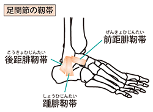

足関節捻挫
足関節捻挫とは
足関節はいわゆる足首のことを指し、足関節捻挫とは足首をひねることで足関節の外側の靱帯（前距腓靱帯、踵腓靱帯、後距腓靱帯）を損傷することです。
身近な外傷のため受傷後もそのまま放置している方が多いですが、痛みがいつまでも残ったり、捻挫をしやすくなったり、足首がグラグラしてゆるい感じが残ったりすることがあるため、初期段階から適切な治療を受けることが大切です。

症状
足首（特に外くるぶしの前や下のあたり）の痛みと腫れ
足首の圧痛（押すと痛い）
足首の皮下出血
足関節捻挫は、靱帯の損傷の程度で以下の3段階に分けられます。
第Ⅰ度（軽 度）：靱帯の損傷がない、もしくは靱帯が伸びる程度のごく軽いもの
第Ⅱ度（中等度）：靱帯の一部が切れたもの
第Ⅲ度（重 度）：靱帯が完全に切れたもの
原因
足関節捻挫の主な原因は、足首を内側にひねることです。
スポーツ中はもちろんのこと、段差を踏み外すなどの日常生活でのちょっとした動きが原因で起こることもあります。
診断
問診や触診、身体所見から足関節捻挫を疑う場合、足関節のレントゲン写真を撮り、骨折がないことを確認します。
特に小児の場合は骨折をきたしていることが多いため、入念な確認が必要です。
MRI検査は、靱帯や軟骨の損傷の程度を評価するのに有用です。
スポーツの現場などでは超音波検査が多く用いられており、靱帯の損傷の程度や靱帯の治り具合を見るのに効果的です。
治療
まずは応急処置のRICE療法を徹底的に行います。
RICE療法とは、Rest（安静）、Icing（冷却）、Compression（圧迫）、Elevation（挙上）の頭文字を取った治療法で、捻挫に限らず肉離れや打撲など、外傷一般に使える応急措置です。
足関節捻挫の治療には、ギプスや装具で関節を固定する保存療法と、手術で靱帯を再建する手術療法があります。
通常の捻挫の場合は、まず保存療法が選択されます。
Ⅰ度の場合はテーピングやサポーター、Ⅱ・Ⅲ度の場合はシーネ（副え木）やギプスを用いた外固定などを行うことが多く、固定は痛みが和らぐまで（目安としては3週間程度）行います。
手術療法を検討するのは、足首の動揺性が重度の足関節外側靱帯が完全に切れたⅢ度のケースで、主にスポーツ選手や仕事で足を使う方が対象となります。
手術は切れた靱帯をつなぐ手術（靱帯縫合術、骨へのアンカー縫合術など）を行います。
リハビリテーション
足関節捻挫の治療には、リハビリがとても大切です。
受傷後早いうちから、硬くなった足首を柔らかくする可動域訓練や足関節周り・体幹の筋トレ、バランス訓練などを行います。
治り具合に応じてジョギングやダッシュ、ストップやサイドキックなどの実践練習を加えます。
参考文献
https://www.joa.or.jp/public/sick/condition/sprain_of_ankle.html
http://jossm.or.jp/series/flie/002.pdf
https://clinicalsup.jp/jpoc/ContentPage.aspx?DiseaseID=2013
https://www.hosp.hyo-med.ac.jp/disease_guide/detail/95